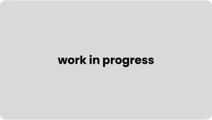

ui ux design
-
discovery
acumen academy è una scuola online in inglese per il cambiamento sociale. all’interno di essa possiamo trovare vari corsi online, ma anche tante iniziative per imparare sul campo. il suo obiettivo è quello di insegnare alle nuove generazioni a misurare i successi in base a come vengono trattati i vulnerabili e non in base a come i privilegiati avanzano. i corsi offerti hanno tre temi principali: build, innovate e lead. troviamo corsi di ogni genere: dal fundrising al marketing, dal design al business strategy nella fase discovery ho analizzato il sito da mobile e desktop e definito le linee guida per apportare delle modifiche volte a migliorare il sito. nel particolare ho svolto l'analisi euristica, dell'usabilità e dell’accessibilità, ho creato la sitemap as is e to be, ho svolto la competitor e comparable analisi, ho definito il target e le user persona, ho definitio journey as is e to be ed ho fatto la lista di pain points e opportunità emerse.
wireframenella fase di wireframe ho progettato e disegnato la versione mobile e desktop del sito. nel particolare ho creato i componenti mobile e desktop, ho disegnato 17 wireframe hi-fi per desktop e 18 per mobile, ho spiegato il contenuto delle pagine e le motivazioni delle mie scelte di design, ho creato i wireflow in base alle user journey to be realizzate nella fase discovery ed ho creato la sitemap definitiva sia con log in che senza log in.
user interfacenella fase ui mi sono occupata di dare vita ai wireframe tramite colori, immagini, forme e interazioni tra i componenti. nello specifico mi sono occupata di creare una color palette, ridisegnare i vari loghi a seconda dell'utilizzo, creare un sistema di elevazione, definire le forme dei vari componenti, prototipare i flussi tra le varie pagine, tracciare il flusso della user journey to be di Giacomo ed Emma.
user testing  -
grafica
in questo progetto mi occupo di creare il branding di incluDO, un'azienda fittizia che si occupa di ripopolare i paesi spopolati tramite l'insegnamento di lavori ormai scomparsi. nel particolare ho creato il logo, definito tipografia e color palette, disegnato dieci icone, definito la strategia social per facebook, instragram e youtube e creato i visual
-
branding e ui/ux design
inook vuole essere una piattaforma sostitutiva ed innovativa del percorso editoriale basata sulla scrittura e condivisione di libri interattivi, con la possibilità di valutare il libro letto in base al livello di apprezzamento. nello specifico mi sono occupata diel branding (logo, color palette, tipografia, icone), dei contenuti social, della ux (user flow, sitemap) e della ui
-
html e css, wireframing e prototyping
work in progress

-
work in progress
work in progress
animazione
-
work in progreess
work in progress
-
work in progress
work in progress
-
showreel: mr mortimer, waiting, elepant, equilibrio e altro
ecco un piccolo showreel di tecniche miste: animazioni 2d, motion graphic, effetti